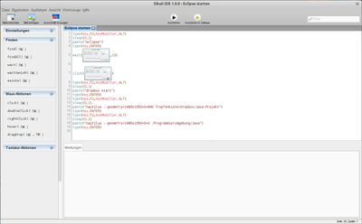

Sikuli
Archivierte Anleitung
Dieser Artikel wurde archiviert, da er - oder Teile daraus - nur noch unter einer älteren Ubuntu-Version nutzbar ist. Diese Anleitung wird vom Wiki-Team weder auf Richtigkeit überprüft noch anderweitig gepflegt. Zusätzlich wurde der Artikel für weitere Änderungen gesperrt.
Zum Verständnis dieses Artikels sind folgende Seiten hilfreich:
Sikuli  ist ein plattformunabhängiges Werkzeug, um Aktionen, die man regelmäßig mit der Maus oder Tastatur ausführt, zu automatisieren (siehe auch die #Links:Beispielvideos). Das erspart Arbeit, wenn man zum Beispiel nach dem Starten eines Programms die immer gleichen Dialoge beantworten muss, wenn man bestimmte Einstellungen regelmäßig ändert und sich dafür jedes Mal durch mehrere Menüs klickt. Ein weiteres Anwendungsgebiet ist die Testautomatisierung. Man nimmt ein Bildschirmfoto von dem auf, was per Links- oder Rechtsklick, Mausberührung, Ziehen und Ablegen oder Tippen mit der Maus bzw. Tastatur gesteuert werden soll und verbindet damit die jeweiligen Aktionen. Sikuli führt diese dann automatisiert aus mithilfe der eigenen Skriptsprache, die ebenfalls in eigene Programme eingebunden werden kann. Das Programm ist quelloffen und steht unter der MIT-Lizenz.
ist ein plattformunabhängiges Werkzeug, um Aktionen, die man regelmäßig mit der Maus oder Tastatur ausführt, zu automatisieren (siehe auch die #Links:Beispielvideos). Das erspart Arbeit, wenn man zum Beispiel nach dem Starten eines Programms die immer gleichen Dialoge beantworten muss, wenn man bestimmte Einstellungen regelmäßig ändert und sich dafür jedes Mal durch mehrere Menüs klickt. Ein weiteres Anwendungsgebiet ist die Testautomatisierung. Man nimmt ein Bildschirmfoto von dem auf, was per Links- oder Rechtsklick, Mausberührung, Ziehen und Ablegen oder Tippen mit der Maus bzw. Tastatur gesteuert werden soll und verbindet damit die jeweiligen Aktionen. Sikuli führt diese dann automatisiert aus mithilfe der eigenen Skriptsprache, die ebenfalls in eigene Programme eingebunden werden kann. Das Programm ist quelloffen und steht unter der MIT-Lizenz.
Installation¶
Für Sikuli existieren keine Paketquellen. Deshalb muss das Programm manuell installiert werden. Voraussetzung ist ein installiertes Java.
Hinweis!
Fremdsoftware kann das System gefährden.
Anmerkung: Die folgende Anleitung bezieht sich noch auf die Version 1.0 und hat sich mit der aktuellen Version 1.0.1 oder neuer geändert.
Vorbereitung¶
32-bit¶
Die Abhängigkeiten SikuliX-1.0-UbuntuLibs32.zip  (s. Github ) herunterladen, entpacken [5] und die einzelnen Dateien mit Root-Rechten [4] nach /usr/local/lib/ verschieben.
(s. Github ) herunterladen, entpacken [5] und die einzelnen Dateien mit Root-Rechten [4] nach /usr/local/lib/ verschieben.
64-bit¶
Die Abhängigkeiten können aus den offiziellen Paketquellen installiert werden [1]:
libopencv-highgui2.4
libopencv-imgproc2.4
libopencv-core2.4
libpng12-0
libtesseract3
liblept3
 mit apturl
mit apturl
Paketliste zum Kopieren:
sudo apt-get install libopencv-highgui2.4 libopencv-imgproc2.4 libopencv-core2.4 libpng12-0 libtesseract3 liblept3
sudo aptitude install libopencv-highgui2.4 libopencv-imgproc2.4 libopencv-core2.4 libpng12-0 libtesseract3 liblept3
Manuelle Installation¶
Sikuli-IDE-1.*-Lnx64.zip (64-Bit) bzw. Sikuli-IDE-1.*-Lnx32.zip (32-Bit) von Launchpad
herunterladen und an einen beliebigen Ort entpacken [5] (z.B. ~/.Sikuli-IDE)Die Dateien sikuli-ide und sikuli-script ausführbar [6] machen. Wenn man bspw. das Programm nach ~/.Sikuli-IDE entpackt hat, kann das im Terminal [3] mit folgendem Befehl erledigt werden:
chmod +x ~/.Sikuli-IDE/{sikuli-ide,sikuli-script}optional: Einen Anwendungsstarter erstellen [7]. Gestartet wird das Programm über die Datei sikuli-ide.
Bedienung¶

Man kann nun Abläufe programmieren, indem man Befehle aus der Leiste links anklickt. Diese sind unterteilt in "Finden", "Maus-Aktionen" und "Tastatur-Aktionen". Wird ein Befehl gewählt, erscheint er im Editor. Wenn das Häkchen bei "Bildschirmfoto sofort" unter "Einstellungen" gesetzt ist, wird Sikuli automatisch minimiert, und man kann einen Bildschirmbereich auswählen, der als Bild gespeichert wird. Es taucht nun hinter dem Befehl auf, und ein Klick darauf öffnet ein Konfigurationsfenster, in dem der Klickpunkt für die Maus festgelegt oder ein neues Bild ausgewählt werden kann. Mit der Schaltfläche "Ausführen" oben kann das Skript gestartet werden.
Ausführbare Skripte¶
Da man sicher nicht immer erst die Sikuli-Programmierumgebung öffnen möchte, um ein Skript auszuführen, kann man ein solches auch ausführbar speichern ("Datei -> Speichern als ausführbar"). Gestartet werden kann es nun im Terminal [3] mit dem folgenden Befehl:
PFAD_ZUM_SIKULI_PROGRAMMORDNER/sikuli-script -r PFAD_ZUM_SKRIPT/Skript.skl
Noch einfacher wird es, wenn man sich einen Anwendungsstarter [7] oder ein Tastenkürzel dafür anlegt (Anleitung für Unity/GNOME 3).
Entwickler¶
Das Sikuli-Script kann auch als Java-Bibliothek von anderen Java-Programmen verwendet werden. Mehr dazu in der Dokumentation .
- Erstellt mit Inyoka
-
 2004 – 2017 ubuntuusers.de • Einige Rechte vorbehalten
2004 – 2017 ubuntuusers.de • Einige Rechte vorbehalten
Lizenz • Kontakt • Datenschutz • Impressum • Serverstatus -
Serverhousing gespendet von